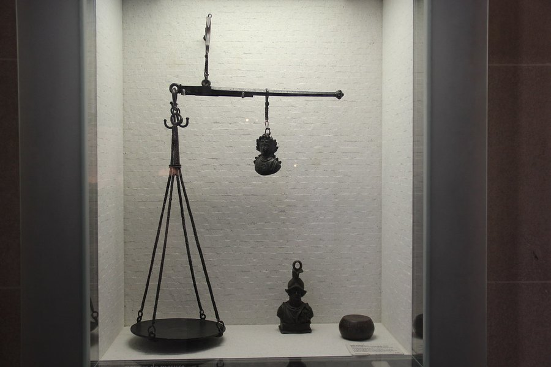

Is MemoHoney Worth It? Who It Suits and Who Should Pass
Worth it is a personal question. It depends on your medications, your patience, and what you're hoping a capsule can do. Here's how to answer it for yourself.

Key takeaways
- For the right person, yes. MemoHoney is worth it if you want one stimulant-free capsule a day, like the blood-flow approach, and will give it about three months.
- The value is in the habit. Its single daily capsule is the easiest regimen in the category to keep, and a supplement you finish beats one you abandon.
- The weak spot is disclosure. Ginkgo and bacopa, the ingredients with real memory research, are on the label without doses.
- Pass if you take blood thinners, blood pressure drugs or nitrates without your doctor's go-ahead, or if you want a product with a fully dosed bacopa extract.
- Cost is about $1.63 to $2.80 a day at the published prices, with no subscription and a 60-day guarantee that takes some effort to use.
Is MemoHoney worth it? For adults who want a simple, once-daily, stimulant-free capsule built around blood flow to the brain, and who'll stick with it for about 12 weeks, we think it's fair value. It isn't worth it if you take blood thinners or heart medication without medical clearance, or if you need every botanical dose printed.
Those two sentences carry most of the answer. The rest of this page explains the reasoning, so you can decide which side of the line you're on. We'll look at what your money buys, what the evidence does and doesn't support, who gets the most from it, who should pass, and how it stacks up against cheaper or simpler options. For the full label breakdown, see our MemoHoney review.

MemoHoney: check today's price
A blood-flow-first formula with ginkgo, bacopa, blueberry and honey. One capsule a day, stimulant-free. Sold only on the official site, with a 60-day money-back guarantee.
See the official price →What do you actually get for the money?
One capsule a day, thirty to a bottle. Each capsule contains twelve ingredients. Seven have printed doses: L-arginine 200 mg, L-arginine AKG 200 mg, L-citrulline HCl 100 mg, L-citrulline malate 100 mg, beta-alanine 40 mg, niacin 7.5 mg and calcium 18 mg. Five don't: ginkgo, bacopa, astaxanthin, blueberry and honey.
It's stimulant-free, made in the US in an FDA-registered facility that follows GMP standards, and sold direct with no subscription. At the prices published when we wrote this, that comes to:
| Package | Per bottle | Per day | Shipping (US) |
|---|---|---|---|
| 2 bottles | $79 | ≈ $2.63 (≈ $2.80 with shipping) | $9.99 |
| 3 bottles | $69 | $2.30 | Free |
| 6 bottles | $49 | ≈ $1.63 | Free |
Prices change, so check the official page. As a frame of reference, $2.30 a day is less than most coffee-shop drinks. That doesn't make it cheap. It makes it a cost worth judging on results, which is the right way to think about any supplement you'd take for months.
The full cost of trying it is more than the sticker, too. Count the time you'll spend on a proper 12-week test, and, if you might want a refund, the postage to send every bottle back. On a three-bottle order that's a modest extra. On six, it's enough to think about before you click.
Does the evidence justify the price?
Partly. The thinking behind the formula is sound. Blood flow to the brain declines with age and tracks with cognitive decline in imaging studies, and ginkgo has been researched for that link since the 1990s. Bacopa has the most consistent memory-specific trial record of any botanical, with modest gains in delayed recall after 8 to 12 weeks.
The gaps are just as real. The four nitric oxide amino acids add up to 600 mg, while circulation research uses several grams. Beta-alanine at 40 mg has no memory rationale. Ginkgo and bacopa are present, but in a single capsule where about 665 mg is already taken by the disclosed ingredients, they can't be at the 120 to 240 mg and 300 mg used in trials. And no published study has tested this finished formula.
That last point applies to almost every memory product sold. Ingredient evidence isn't product evidence. What you're buying is a reasonable bet, not a proven result.
It also helps to be realistic about size. Even in bacopa's better trials, the gains in delayed recall are modest: a few more words remembered from a list, not a different brain. If MemoHoney helps you, expect something you notice in specific moments, like a name coming back faster or fewer trips to another room wondering why you went. If you're hoping for more than that, no capsule in this aisle is likely to be worth it.
Who is MemoHoney worth it for?
The people who'll get the most value share a few traits. You don't need all of them, but the more that fit, the better the case.
- You've quit supplements before because of the routine. Two or three capsules at set times is where most regimens fail. One capsule with breakfast, no timing rules, is far easier to keep for 90 days.
- You want something stimulant-free. There's no caffeine in it, so it won't stack with your coffee or keep you up at night.
- The blood-flow angle makes sense to you. If you'd rather support circulation than take another adaptogen blend, this is one of the few formulas built around that idea.
- You've already handled the basics. Sleep, movement and blood pressure have stronger evidence than any capsule. MemoHoney is a reasonable add-on to those, not a substitute. Our guide on how to improve memory covers the habits that matter most.
- You're patient. You'll take it daily for eight to twelve weeks and measure the result, rather than judging it in the first fortnight.
Who should pass on MemoHoney?
This is the more important list. A product can be good value for one person and the wrong choice for the next.
- People on blood thinners or antiplatelet drugs such as warfarin, aspirin or clopidogrel. Ginkgo has a documented interaction, and it's commonly advised against alongside them. Don't start without your doctor's go-ahead.
- People on blood pressure medication, nitrates like nitroglycerin, or PDE5 inhibitors like sildenafil. The nitric oxide ingredients work on the same vessel-widening pathway. At these doses a big effect is unlikely, but it's exactly the mechanism of the formula, so it needs a medical check.
- Anyone with a bleeding disorder, surgery within two weeks, or who is pregnant or breastfeeding.
- People who want a fully dosed bacopa product. If bacopa is why you're shopping, a standalone extract standardized for bacosides at around 300 mg gives you a verifiable trial dose. MemoHoney can't promise that. Our bacopa monnieri guide explains what to look for.
- Anyone who needs every milligram printed. Seven of twelve is better than a proprietary blend, but it isn't a fully open label.
- Anyone hoping to treat a diagnosis. No supplement treats, prevents or reverses dementia. If memory changes are sudden or getting worse, see a doctor first.
Two more groups belong near this list, even if they aren't strict no's. If you want to feel something within days, you'll likely be disappointed, because the parts of the formula with memory research are slow. And if dealing with a return by post sounds like a chore you'd never actually do, the guarantee won't protect you much in practice. Neither is a safety issue. Both are good reasons to pick something else, or to start with a smaller order.
Is MemoHoney better value than the alternatives?
It depends what you're comparing it with. Here's how the main options line up on the questions that actually decide value:
| Option | What you get | Doses you can verify | Best for |
|---|---|---|---|
| MemoHoney | Blood-flow amino acids, ginkgo, bacopa, antioxidants in one daily capsule | 7 of 12 | Simplicity and a once-daily habit |
| Standalone ginkgo | One botanical at a research-level dose | Yes | The blood-flow idea at the lowest cost |
| Standalone bacopa | Standardized extract at a trial dose | Yes | Recall, if you'll wait 12 weeks |
| Fully disclosed multi-ingredient formula | Several ingredients, all doses printed | All | People who want to check everything |
| Lifestyle changes | Sleep, walking, blood pressure control | Not applicable | Everyone, and they cost little or nothing |
The honest takeaway from the table: if one mechanism is all you want, a single-ingredient product is cheaper and more transparent. Our guide to ginkgo biloba for memory covers that route. What MemoHoney adds is breadth plus convenience in a single daily step. If you'd otherwise end up taking two or three separate bottles, and realistically stop after a month, the bundle earns its price.
Does the 60-day guarantee make it worth trying?
It lowers the risk, but it doesn't remove it. The guarantee runs 60 days from purchase. The terms described in our review are stricter than the marketing: you request a refund by email, return all bottles including empties, and pay the return shipping yourself. Refunds are processed roughly 5 to 10 business days after the seller receives the package, and some versions of the terms ask for at least 30 days of use first.
There's also a timing tension. The botanicals need 8 to 12 weeks, and the window closes at about 8.5. If you want the refund to stay possible, decide around week seven and leave time for the return to travel. Factor that effort into whether it's worth it for you. If you know you'd never bother posting bottles back, treat the guarantee as a backstop, not the reason to buy.
What would make MemoHoney better value?
One change, mostly: print the doses of ginkgo and bacopa. Those two are the main reasons the formula is interesting, and they're the two you can't check against the research. A disclosed ginkgo amount near the studied range would turn the blood-flow thesis from plausible to verifiable.
Dropping beta-alanine, which does nothing useful at 40 mg, would free a little room for the botanicals. And folding four amino acid entries that share one mechanism into fewer lines would make the label read more honestly. None of that makes the current product unsafe or unusual. It's the difference between a good formula and a better one.
How do you know if it was worth it for you?
Price per day only tells you what you spent. Worth is decided at the end of the trial, and it's easy to fudge that judgment when the faculty you're judging is memory. Set your own test up so the answer is hard to argue with:
- Before the first capsule, take a short memory test and note the score and the date. Write down two or three everyday slips that bother you, such as names at work or words on the tip of your tongue.
- Keep everything else steady. Same sleep, same coffee, same exercise routine. Otherwise you won't know what changed.
- At week seven, look at your notes. This is the last comfortable point to decide on a refund, so be honest about whether anything has moved.
- At week eight to twelve, retake the same test. Compare the scores and reread your list of everyday slips.
If the score has improved and the slips feel less frequent, it was probably worth it, and the 6-bottle pack becomes the sensible way to continue. If nothing has shifted after twelve consistent weeks, it wasn't, and that's a clear answer worth having. Stop, keep the money, and try a different approach rather than hoping month four will be different.
MemoHoney pros and cons at a glance
| Worth paying for | Worth knowing before you pay |
|---|---|
| One capsule a day, the easiest routine in the category | Ginkgo, bacopa, astaxanthin, blueberry and honey have no printed dose |
| Coherent blood-flow thesis rather than a kitchen-sink blend | Nitric oxide amino acids total 600 mg against grams in research |
| Seven of twelve doses printed, more than most blends | Beta-alanine at 40 mg has no memory rationale |
| Stimulant-free, low-dose niacin | Refund requires returning all bottles at your cost |
| No subscription, one-time charge | More drug interaction flags than simpler products |
| About $1.63 a day on the 6-pack | No published trial on the finished formula |
MemoHoney: check today's price
A blood-flow-first formula with ginkgo, bacopa, blueberry and honey. One capsule a day, stimulant-free. Sold only on the official site, with a 60-day money-back guarantee.
See the official price →The verdict: is MemoHoney worth it?
For the person it's built for, yes. If a single daily capsule is the only routine you'll realistically keep, you like the blood-flow approach, your medications don't conflict, and you'll give it three months, MemoHoney is a fair buy. Our review scored it 9.2 out of 10 on safety, value, breadth and ease of use, and the ease-of-use part is the one that decides whether anyone benefits.
If you want proof on paper, a fully dosed bacopa product or a research-level ginkgo dose, pass and buy those directly. Either way, take our free memory test before you start and again at week eight. A number on a page will tell you more than memory ever can. Compare the wider field in our best memory supplements of 2026.
Frequently asked questions
How long before I know if MemoHoney is working?
Plan on about eight to twelve weeks of daily use. The nitric oxide ingredients act within hours if at all, but at these amounts most people won't feel them. Ginkgo and bacopa are cumulative, and their research runs 8 to 12 weeks.
Is MemoHoney worth it for someone in their 40s?
Age matters less than the reason you're buying. If you're mostly tired or stressed, sleep and workload are the first things to fix. If you want a simple daily supplement and have no medication conflicts, MemoHoney is a reasonable option at any adult age.
Can I take MemoHoney with coffee?
Yes. MemoHoney is stimulant-free, so it doesn't add to your caffeine intake. That's one reason it's easy to fit into a morning routine.
Is the 6-bottle pack worth it for a first order?
Only if you're confident you'll take it for six months. It has the lowest daily cost, but it commits you before you know whether the formula suits you. For a first order, three bottles covers a fair 12-week trial with less money at stake.
Does MemoHoney have any sugar from the honey?
Honey is a minor ingredient without a printed amount, listed low on the panel in a single small capsule. The amount is negligible. MemoHoney isn't a spoonful of honey, and the name is branding rather than a description of the formula.
What if I stop taking it after a few weeks?
Nothing harmful happens, but you won't have tested it properly. If you stop early, you can still request a refund within 60 days of purchase, following the seller's terms, which include returning all bottles at your own shipping cost.
Is MemoHoney a scam?
No. It's a real product with a published supplement facts panel, a US distributor, a support line and a 60-day refund policy. Our criticism is about disclosure and dosing, not legitimacy.
Think it suits you?
See MemoHoney's current packages on the official site. One capsule a day, stimulant-free, no subscription, 60-day guarantee.
See MemoHoney's official price →Related: MemoHoney review · Bacopa monnieri benefits · Ginkgo biloba for memory · How to improve memory · Best memory supplements of 2026